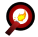
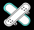

Holovisio

Max Prin : CosmoNova
Alex Ringenbach : Robopture
Lison Pruvost : NextWear
Melvyn Philippon : LEVIGNIS
Denis Ozer : Sonic Relics
Maéna Rabusseau : GreenDouch’

Dorian Fernandez-Cerqeira : ChronoRide
Pierre Mouilleseaux-Lhuillier : Prephonos
Camille Norrito : Pub Néo Rétro
Ethan Schwartzentruber : Echos du futur
Lucas Ielsch : BoardBeyond
Bryan Menoux : Rebirth